按周次聚合同一主题在不同周报中的原文、原图与 mkk 评语。
追踪范围：W1（一次性分析） | 当前状态：W1 后未再出现
规模和活跃度持续增长。日新进稳定100w+，日活由首日60w涨至356w，新进次留59%、三留51%、七留42%，日均在线128min；
付费深度较浅，日均ARPU ¥1.1，付费率8%；去除1元党后，付费率3%，ARPPU ¥43
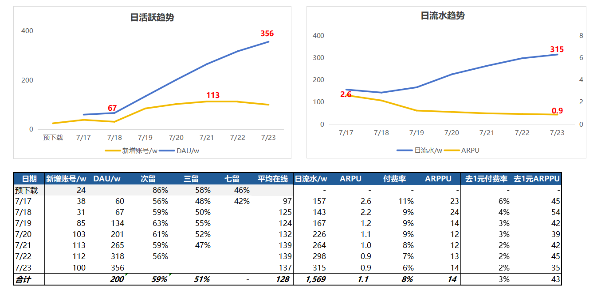
得益于良好的留存表现，首日新进用户的LTV7 ¥8，较首日增长4.4倍，高于竞品首日
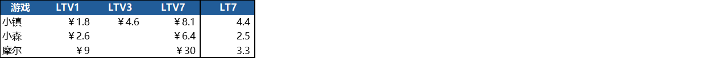
📎 原文：首周周报
早期留存数据非常健康——七留 42% 优于同期竞品，LTV7 达 ¥8（首日 4.4 倍），说明产品核心体验的吸引力很强。
但需要注意的是，首周的留存数据受"新鲜感红利"加持，后续周报再未披露留存细节（可能是因为数据开始走低不想重复暴露）。如果结合 W3 七留已跌至 34%(-8pp) 的信息，留存衰减的速度并不慢。这也解释了为什么后续活跃持续流失——不是没有新用户进来，而是留不住。
追踪范围：W15 → W85 | 当前状态：持续补充中（以回流/活跃专题为主）
近15日登录设备，大部分苹果设备内存4、6、8GB；iPad:iPhone设备数量约为1:2.85
苹果设备（手机+iPad）内存分布如下：3GB设备占比约17%，贡献8%流水；4GB设备占比32%，贡献24%流水；6GB设备占比30%，贡献35%流水；8GB设备占比19%，贡献32%流水
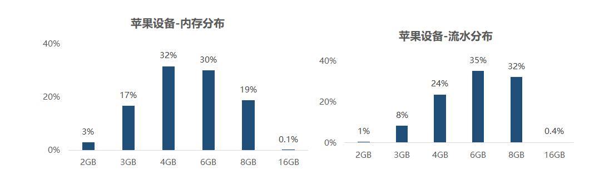
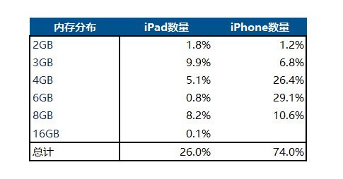
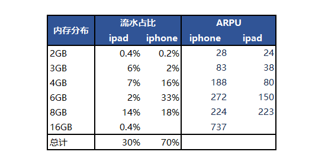
📎 原文：第十五周周报
设备配置是付费能力的强代理变量。3GB 设备占 17% 仅贡献 8% 流水；8GB 设备占 19% 贡献 32% 流水——高配设备用户付费能力是低配的 4 倍。iPad:iPhone ≈ 1:2.85。可以作为精准运营的分层依据。
6.5日小镇第二次技术冷更，第一次是去年11.28。冷更前一周平均登录比为97%，更新当日登录比降至 86%，更新第5日回升至 96%。与1128冷更相对比，本次冷更的登录比恢复速度较快，第6日已恢复至原来水平
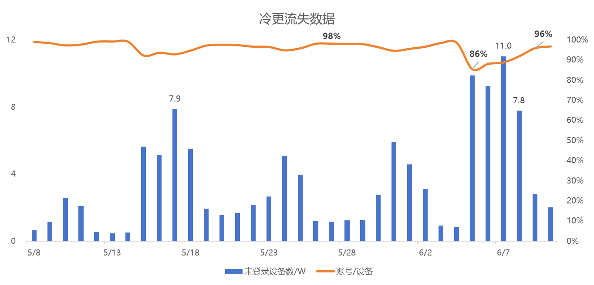
📎 原文：第四十七周周报
📌 mkk: 冷更当日丢失11%的登录用户（97%→86%），但6天内完全恢复。相比首次冷更恢复更快，说明玩家对冷更流程已有心理预期。冷更带来的最大风险不是长期流失而是短期数据波动。
周年庆版本前5日回流 75w，回流玩家平均在线时长（5天总计）108min。老流失玩家回归人数较多，其中 13w 玩家为开服流失玩家，17w 玩家为奇灵夜-新春版本之间流失玩家
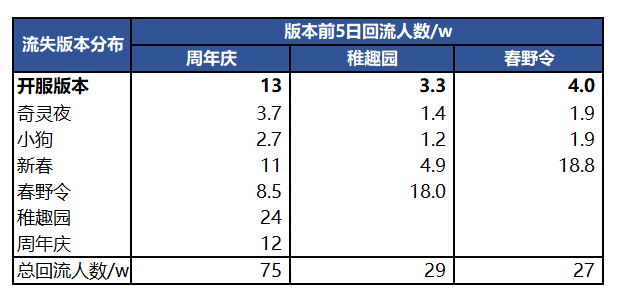
📎 原文：第五十三周周报
📌 mkk: 75w回流中30w（13+17）来自深度流失用户，说明周年庆+小马IP的组合拳能够触达已经离开很久的用户。但回流人均在线仅108min/5天（约22min/天），远低于活跃用户日均69min，回流用户的留存转化才是真正的挑战。
对比各玩法，周年庆回流玩家主要还是受抽卡券福利刺激（参与率 80%）和小马宝莉抽卡（参与率 65%）
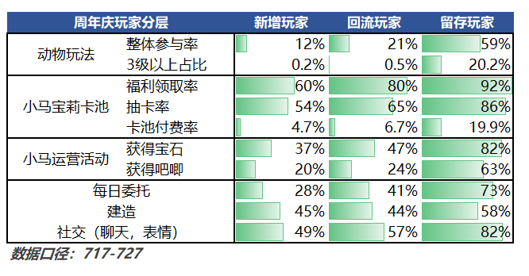
📎 原文：第五十四周周报
📌 mkk: 回流用户80%参与抽卡券、65%参与小马抽卡——回流动机高度集中在"免费福利"和"IP吸引力"。一旦福利期结束+IP热度消退，回流用户留存将面临严峻考验。需要思考如何在福利窗口期内将回流用户引导到日常玩法循环中。
小号判断标准：规定拥有3个账号以上，登录每日登录时长30分钟以下且未付费的账号为小号。周年庆版本上线后一周，DAU上涨 35w，其中小号 3.5w，影响不大
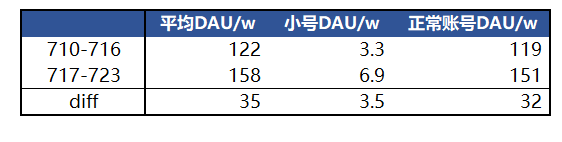
📎 原文：第五十四周周报
📌 mkk: 小号占DAU增量的10%（3.5/35w），对整体数据的污染可控。不过小号判断标准（3个账号以上+<30min+未付费）偏严格，实际多开数可能更高。
整体活跃数据：暑期（6.30-8.24）活跃620w用户，相比于平时版本（稚趣园5.10-6.29）上涨54%。
活跃增长拆分：暑期活跃增长的51%来源于玩家回流，42%来源于新增增长，7%来源于留存率提升贡献。
周/日活跃数据：暑期平均周活跃241w（+50%），DAU 131w（+70%），日均时长68min（+34%）。
活跃留存率对比平时：暑期回流和留存玩家的活跃留存率明显高于平时，表明用户黏性更高。
分群留存率对比：暑期留存玩家 > 回流玩家 >= 新增玩家。
回流玩家-流失版本分布：27%来源于去年开服→沙滩季的流失玩家，32%为奇灵夜→春节流失的玩家，40%是近两个版本刚流失的玩家。
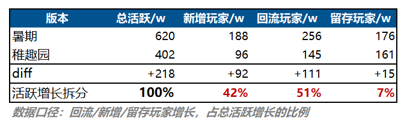
📎 原文：第五十八周周报
📌 mkk: 暑期增长的结构非常清晰——回流(51%)是第一驱动力，新增(42%)是第二驱动力，留存提升(7%)几乎可忽略。这意味着小镇的增长引擎是"拉老用户回来"而非"让现有用户留更久"。回流来源中40%是近两版本流失——他们最容易被拉回也最容易再流失，是最需要关注的群体。
暑期回流和留存玩家的活跃留存率明显高于平时，表明用户黏性更高。分群留存率对比：暑期留存玩家 > 回流玩家 >= 新增玩家。
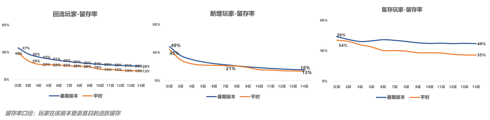
📎 原文：第五十八周周报
📌 mkk: 暑期的"内容密度+假期时间"双重buff下，留存率全面提升。但分层差异清晰：留存玩家最稳，回流次之，新增最弱——说明新增用户的首周体验仍有优化空间。
暑期留存用户是付费主力，活跃人数仅176w人，是三个分群中最少的；但贡献了暑期75%的流水，付费率30.1%，付费ARPU￥214。
付费率：留存玩家卡池付费率28.5%，其他中小额付费项付费率均在17%左右。
付费ARPU：留存玩家卡池付费ARPU达到￥192。
流水占比：53%的流水来源于留存用户对卡池的贡献。
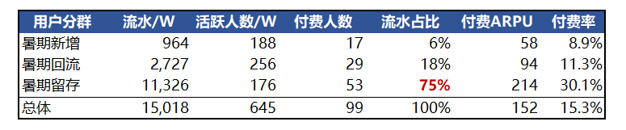
📎 原文：第五十九周周报
📌 mkk: 176w留存用户贡献75%流水——这是典型的"鲸鱼效应"。ARPU¥214和卡池ARPU¥192都是极高水平，说明留存用户的消费深度远超其他群体。但依赖度过高是风险：如果这批核心用户流失，流水影响会是灾难性的。
甄嬛上线前4日，拉动27.8w用户回流。
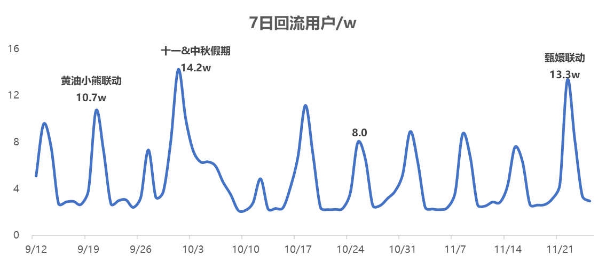
📎 原文：第七十一周周报
📌 mkk: 甄嬛联动的回流拉动力(27.8w/4天)与小狗联动(后续版更分析中回流+21w/周)属于同一量级。IP联动是目前最有效的回流手段，但甄嬛的问题在于"回流了但没怎么付费"（详见付费板块）。
今年在1.31大卡池+BP上线后，日活大幅上涨74w->114w（+60%），随后在一周的舆情中稍有衰减至95w，但在2.10二次补偿后，日活回升至112w。
去年（25年同期，按照与春节的日期差做图）由于大卡池和BP分开上线，则为2次小幅的活跃上涨。
周回流43w。
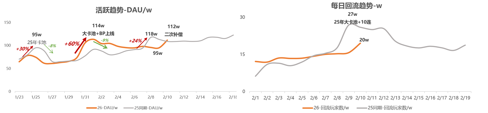
📎 原文：第八十二周周报
📌 mkk: 大卡池+BP同时上线策略制造了更强的单次活跃脉冲(+60%)，但也意味着后续没有第二波拉升内容。去年分开上线虽然单次幅度小但形成了两个活跃波峰。舆情导致的衰减(-17%)和补偿后的回升(+18%)说明社区情绪对活跃有直接影响。43w的周回流是甄嬛(27.8w/4天)和元旦(19.3w/3天)之后的最高水平。
小镇26年春节期间日活上涨33%（小镇25年为28%，香肠26年为29%）
小镇26年节后日活回落，日活-17%（小镇25年为-10%，香肠26年 -15%）
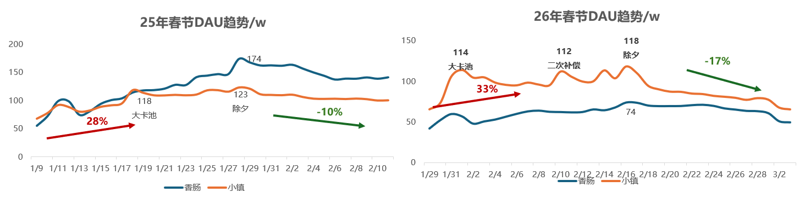
📎 原文：第八十五周周报
📌 mkk: 小镇春节拉升力度(+33%)略优于香肠(+29%)和自身去年(+28%)，但节后回落(-17%)也是三者中最严重的——说明春节内容对"泛用户"的吸引力更强（拉得起），但留不住（回落快）。相比去年-10%的回落，今年-17%可能与"大卡池+BP同上叠加通票补偿"导致内容一次性消耗过快有关。